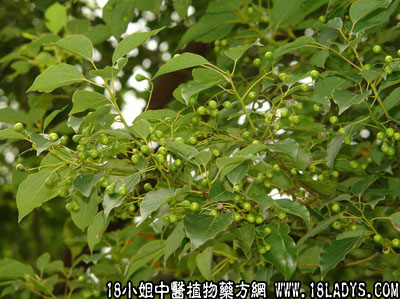

植物名：樟树。
生长环境：本品为高大乔木，有野生及栽培的，生长于山坡或沟谷中。
分布：我国东南部及中部、广西、广东分布极为普遍，广州附近亦有栽培。
入药部分：果。
采集期：夏、秋。
自采地点：家种。
性味：性温、味辛。
功能：祛风通窍、行气消滞、止痛消肿。
主治、用量和用法：疴呕肚痛：干用5钱至1两，打碎，清水煎服。或配黑老虎5钱至1两同煎。
附录：（根）1、治寒湿脚气，配伍用；2、治风肿：用根适量，煎水外洗患处。
验方：（治寒湿脚气方）樟木根1两、千斤拔1两、牛大力1两、走马箭1两、清水五碗，煎成一碗服。
（方解）寒湿脚气、多见脚部浮肿，兼有痛痹。本方用千斤拔补肾腰行气，去痹痛，牛大力理血，走马箭通络舒筋，樟木根祛风行气，黑老虎辛温散寒，合为温散寒湿之剂。
（方歌）寒湿脚气浮肿痛，樟木根牛大力纵，千斤拔走马箭根，寒湿痹痛从此送。
参考资料：《广东中医》（1960.5）新化县委除害灭病领导小组报告：樟蓼合剂防治肠胃道传染病，药物组成：鲜樟脑根20斤、鲜红蓼草10斤、鲜香薷草10斤、鲜平地铺10斤、鲜黄荆叶5斤、给预防服药6800人，8个月内作三次调查，无一人发痢疾及肠炎，治疗1150人（寒湿型736人，热型206人，寒热夹什型208人），达到疗效100%。
《上海验方选编集第一集》内记载治风寒胫骨疼痛验方：樟树皮末加生姜锤匀，和入酒糟，炒热，贴患处，冷则患掉，日夜勿断。
本文解释权归中药大全，本文地址：https://www.daquan.com/post/1532.html